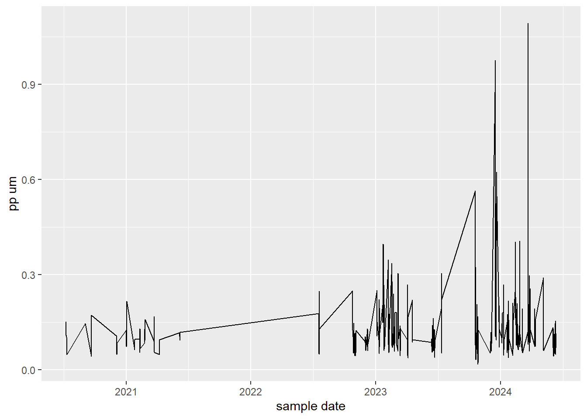

Expand to view code.
library(dplyr)
library(readxl)
library(purrr)
library(stringr)
library(ggplot2)This script is designed to compare a collection of spreadsheets against a master (AKA ground-truth) spreadsheet. The objective is to determine if all rows in the collections of spreadsheets exist in the master, whilst also confirming that the master does not have extra rows that the collections are missing.
In a generalised sense, this problem can be visualised with the following diagrams.
The task becomes determining where the collection of spreadsheets sit within the master spreadsheet, and identifying if the rows/columns actually do not exist in the master, or is there some small discrepency such as a typo that is causing the issue.
There are several factors that may falsely cause discrepencies that must be consider when solving this issue, we must account for:
After accounting for these false positives, it is then possible to identify the source of any true positives (discrepencies) such as:
Finally, the solution must be as generic as possible so it can be applied in other scenarios.
Only a very simple set up is required, a few basic packages and then reading in all the data. Note that the collection of spreadsheets should be stored in a list, and the master should be kept separate.
library(dplyr)
library(readxl)
library(purrr)
library(stringr)
library(ggplot2)#get a list of datasets
file_names <- list.files("data/", full.names = TRUE)
#load the master (ground-truth) data by itself
gt_data <- read_xlsx(file_names[4], sheet = 2)
#load the collection of datasets together
collection_data <- map(file_names[1:3], ~read_xlsx(.x, 2))The first step is to address differences in column names, to do this we will need to compile a list of all column names that exist across both the gt and collection datasets. The idea here is to determine the amount of “true” variation in column names. To make things easier to check, the column names should be ordered alphabetically.
#extract all column names
all_col_names <- sort(
unlist(
map(
c(list(gt_data), collection_data),
colnames
)
)
)all_col_names [1] "ACOUSTIC_DEPTH" "ACOUSTIC_DEPTH" "ACOUSTIC_DEPTH"
[4] "ATTRIBUTION" "CHL (ug/L)" "Chl_ug/L"
[7] "Chl_ug/L" "Chl_ug/L" "COLLECTION_START_DATE"
[10] "DEPTH_AVG_TO" "DIP (uM)" "LATITUDE"
[13] "LATITUDE" "LATITUDE" "LATITUDE"
[16] "LOCATION_NAME" "LOCATION_NAME" "LOCATION_NAME"
[19] "LOCATION_NAME" "LONGITUDE" "LONGITUDE"
[22] "LONGITUDE" "LONGITUDE" "NH4 (uM)"
[25] "NH4_INSITU (uM)" "NO2 (uM)" "NO2_uM"
[28] "NO2_uM" "NO2_uM" "NO3 (uM)"
[31] "NO3_uM" "NO3_uM" "NO3_uM"
[34] "PN_SHIM (uM)" "PN_uM" "PN_uM"
[37] "PN_uM" "PP (uM)" "PP_uM"
[40] "PP_uM" "PP_uM" "PROJECT"
[43] "PROJECT" "PROJECT" "PROJECT"
[46] "SAMPLE_DATE" "SAMPLE_DATE" "SAMPLE_DATE"
[49] "SECCHI_DEPTH (m)" "Secchi_depth_m" "Secchi_depth_m"
[52] "Secchi_m" "SHORT_NAME" "SHORT_NAME"
[55] "SHORT_NAME" "SHORT_NAME" "SS (mg/L)"
[58] "STATION_CLASS" "STATION_CLASS" "STATION_CLASS"
[61] "STATION_CLASS" "STATION_NAME" "STATION_NAME"
[64] "STATION_NAME" "STATION_NAME" "TDN_PER (uM)"
[67] "TDN_SHIM (uM)" "TDP_PER (uM)" "TEMP (degrees Celsius)"
[70] "TSS_mg/L" "TSS_mg/L" "TSS_mg/L" Looking at this list of names we can already spot some double ups, for instance “CHL (ug/L)” and “Chl_ug/L” refer to the same column and should have their name standardised. However, this is an area to tread cautiously - if you updated “XYZ (ug/L)” to match “XYZ_mg/L” you would be making a fatal error.
Generally it is a good idea to start with grammar and syntax, things like capitals, brackets, underscores, etc. Following this some obvious changes such as aligning “secchi depth m” and “secchi m” can occur. Finally, after some detailed exploration of the datasets we can indentify things such as “pn um” = “pn shim um”, “tss mg/l” = “ss mg/l” and “depth avg to” = “acoustic depth”.
#create a list of replacements
replacements <- c(
"collection start date" = "sample date",
"secchi depth m" = "secchi m",
"pn shim um" = "pn um",
"^ss mg/l" = "tss mg/l",
"depth avg to" = "acoustic depth"
)
all_col_names <- all_col_names |>
str_to_lower() |>
str_remove_all("\\(|\\)") |>
str_replace_all("_", " ") |>
str_replace_all(replacements) |>
unique()
#generalise this method into a function for use later
col_name_cleaner <- function(input_string) {
input_string |>
as.character() |>
str_to_lower() |>
str_remove_all("\\(|\\)") |>
str_replace_all("_", " ") |>
str_replace_all(replacements)
}This leaves us with a list of all possible unique column names across all of our datasets. Ideally we would then find that every single name in this list exists in the groundtruth spreadsheet. So lets check that out.
#run function on gt data
gt_data <- gt_data |>
rename_with(
.cols = everything(),
~col_name_cleaner(.)
)
#compare gt data column names to the list of all names
all(all_col_names %in% colnames(gt_data))[1] TRUESucess!
Conversely, the colnames that don’t exist in the collection are:
collection_clean_data <- map(collection_data, ~rename_with(.x, ~col_name_cleaner(.)))
exists_2 <- all_col_names %in% colnames(collection_clean_data[[1]])
all_col_names[!exists_2][1] "attribution" "dip um" "nh4 um"
[4] "nh4 insitu um" "tdn per um" "tdn shim um"
[7] "tdp per um" "temp degrees celsius"On this side of things while more columns are missing, none are columns that we have historically used in the Technical Report. Therefore, for the purposes of this comparison these columns will be removed from the ground-truth dataset to basically arrive at the point where all columns are shared. Referencing the coloured rectangles again, not how the columns of the collection now exists fully within the master, and that the columns of the master have been cut down to match:
gt_clean_data <- gt_data |>
select(!all_col_names[!exists_2])Now that we have established that all differences in columns were false positives we can move on to inspecting rows.
First we will filter data by “short name” to only keep sites of interest (this vector can be updated as needed). This removes sites that are outside the N3 region and/or are not regularly monitored.
short_names_to_keep <- c(
"BUR1", "BUR10", "BUR13", "BUR2", "BUR4", "BUR7", "BUR8", #(burdekin/dry tropics sites)
"C1", "C11", "C4", "C5", "C6", "C8", #(Wet Tropics)
"RM1", "RM10", "RM11", "RM12", "RM2", "RM3", "RM4", "RM5", "RM6", "RM7", "RM8", "RM9", #(Wet Tropics)
"TUL10", "TUL11", "TUL2", "TUL3", "TUL4", "TUL5", "TUL6", "TUL7", "TUL8", "TUL9", #(Wet Tropics)
"WHI1", "WHI4", "WHI5", "WHI6", "WHI7" #(Whitsundays)
)
#apply to ground_truth
gt_clean_filtered_data <- gt_clean_data |>
filter(`short name` %in% short_names_to_keep)
#apply to collection
collection_clean_filtered_data <- map(collection_clean_data, ~filter(.x, `short name` %in% short_names_to_keep))Then we need to restrict our timeframes, looking at the min date from the collection is a reasonable cutoff point, but to ensure we don’t make any mistakes if the collection has been accidently cut off early we will move the cutoff to the start of the year rather than mid year (i.e. instead of 2020-07-09 we will use 2020-01-01).
gt_clean_filtered_data <- gt_clean_filtered_data |>
filter(`sample date` >= "2020-01-01")
collection_clean_filtered_data <- map(collection_clean_filtered_data, ~filter(.x, `sample date` >= "2020-01-01"))This leaves us with the following stats:
gt_min <- min(gt_clean_filtered_data$`sample date`)
gt_max <- max(gt_clean_filtered_data$`sample date`)
gt_length <- length(unique(gt_clean_filtered_data$`sample date`))
collect_min <- min(do.call("c", map(collection_clean_filtered_data, ~min(.x$`sample date`))))
collect_max <- max(do.call("c", map(collection_clean_filtered_data, ~max(.x$`sample date`))))
collect_length <- length(unique(unlist(map(collection_clean_filtered_data, ~unique(.x$`sample date`)))))As we would expect the GT table has both an earlier start and later finish, however the total count of unique dates is still way higher than is expected. To demonstate this, consider the following sampling rates:
gt_range <- as.numeric(gt_max - gt_min)
collect_range <- as.numeric(collect_max - collect_min)
gt_sample_rate <- gt_range/gt_length
collect_sample_rate <- collect_range/collect_lengthThis is basically saying the GT table has twice as many samples within the same timeframe as the collection of spreadsheets. I.e., with the timeframe established by the collection there are missing rows. This can be explained with the following plot which highlights a series of missing values for the 2022 period:
ggplot(do.call(bind_rows, collection_clean_filtered_data), aes(x = `sample date`, y = `pp um`)) +
geom_line()
This simply the case because we don’t appear to have an original record of the 2022 data on file.
(Note, once the 2022 data is found this section is not necessary).
With the tables as aligned as they are going to get we can now directly compare them.
#combine the list of datasets into one
collection_clean_filtered_data <- do.call(bind_rows, collection_clean_filtered_data)
#use an anti join to find rows in x that dont exist in y: anti_join(x,y)
missing_collect_rows <- anti_join(collection_clean_filtered_data, gt_clean_filtered_data)This tells us there are 47 rows in the collection that don’t exist in the GT dataset.
Our first assessment of these problems rows is that errors seem related to the time being missing in the date col (registering as 00:00:00), but there are still a few rows that do have times that have popped up. The errors for each of these have been identified as follows:
Overall, it looks like every issue of a row from a spreadsheet not found in the gt table is related to metadata.
However we still need to compare in the other direction:
#use an anti join to find rows in x that dont exist in y: anti_join(x,y)
missing_gt_rows <- anti_join(gt_clean_filtered_data, collection_clean_filtered_data)This tells us there are 789 rows in the GT dataset that don’t exist in the collection dataset. At this point the issue identified with times is relevant again.
The first thing we want to check, is if any of the missing GT rows are in the timeframe set out by the collection.
missing_within <- missing_gt_rows |>
filter(
`sample date` > min(collection_clean_filtered_data$`sample date`) &
`sample date` < max(collection_clean_filtered_data$`sample date`)
)Of which, 442 rows are.
The second thing we want to do is eliminate the rows we already identified earlier, as we know the cause of those errors.
pseudo_matches <- missing_collect_rows |>
bind_rows(missing_within) |> #combine the two datasets
group_by(across(-c(`sample date`, latitude, longitude))) |> #group by everything but date, lat, and long (these drove the differences and if they are removed we will be able to find matches for the rows)
mutate(double = n()) |> #count rows that have doubled up
ungroup() |>
filter(double == 2) # keep rows that double (i.e have a match)
#use this pseudo match table, to remove the relevant rows
missing_within <- anti_join(missing_within, pseudo_matches)Next we want to confirm that the differences are not driven by mistakes in the metadata (such as different lat and long values). TO do this we will completely remove metadata information and see if the unique combination of observation values have matches.
gt_no_meta <- missing_within |>
select("acoustic depth", "pp um", "pn um", "no2 um", "no3 um", "tss mg/l", "chl ug/l", "secchi m")
col_no_meta <- collection_clean_filtered_data |>
select("acoustic depth", "pp um", "pn um", "no2 um", "no3 um", "tss mg/l", "chl ug/l", "secchi m")
missing_no_meta <- anti_join(gt_no_meta, col_no_meta)Joining with `by = join_by(`acoustic depth`, `pp um`, `pn um`, `no2 um`, `no3
um`, `tss mg/l`, `chl ug/l`, `secchi m`)`However this does not eliminate any additional rows, which further reinforces the idea that these missing rows are true positives.
Next we want to consider the the 2022 financial year period, and the fact that we don’t have a collection spreadsheet for that time. Therefore, we will need to remove this period from the GT dataset to not get false positive missing values.
(Note, once the 2022 data is found this section is not necessary).
missing_within_no_22 <- missing_within |>
filter(`sample date` < "2021-07-01" | `sample date` > "2022-06-30")This limits us down to only 181 rows. Which is a reasonable number to start manually inspecting for trends.
What is immediately obvious is the type of sites still missing. Specifically:
unique(missing_within_no_22$`short name`) [1] "TUL8" "TUL6" "BUR13" "C1" "TUL2" "WHI1" "C5" "TUL3" "TUL5"
[10] "C8" "RM1" "RM7" "C11" "RM8" "TUL7" "WHI6" "WHI4" "C4"
[19] "WHI7" "RM3" "RM10" "WHI5" "TUL4" "TUL9" "TUL10" "TUL11" "BUR10"
[28] "C6" The only sites that are missing are those outside the Dry Tropics region. This is because the 2021 financial year dataset is exclusive to the Dry Tropics sites.
Once all false positives have been accounted for, there are no significant differences between the groundtruth, and the collection of spreadsheets.
Due to the unique nature of each case, the resuability of this exploration is limited. However, below are some generalised steps that should always been applied along with custom explorations.
#get a list of datasets
#file_names <- list.files("path_to_data", full.names = TRUE)
#load the master (ground-truth) data by itself
#gt_data <- read_xlsx("path_to_data") or read_csv()
#load the collection of datasets together
#collection_data <- map(file_names[X:X], read_xlsx)#extract all column names
#all_col_names <- sort(unlist(map(c(list(gt_data), collection_data), colnames)))#create a list of replacements (CUSTOMISE)
#replacements <- c("X" = "Y")
#generalised cleaner
#col_name_cleaner <- function(input_string) {
# input_string |>
# as.character() |>
# str_to_lower() |>
# str_remove_all("\\(|\\)") |>
# str_replace_all("_", " ") |>
# str_replace_all(replacements)
#}
#using the generalised cleaner
#gt_data <- gt_data |>
# rename_with(
# .cols = everything(),
# ~col_name_cleaner(.)
# )
#collection_clean_data <- map(collection_data, ~rename_with(.x, ~col_name_cleaner(.)))Note: this is almost entirely unique to the case study, no (valuable) reuseable code has been identified.
#combine the list of datasets (the collection) into one dataset
#single_df <- do.call(bind_rows, list_of_df)
#use an anti join to find rows in x that dont exist in y
#missing <- anti_join(x, y)
#likewise, do the reverse to cover all bases
#missing_2 <- anti_join(y, x)